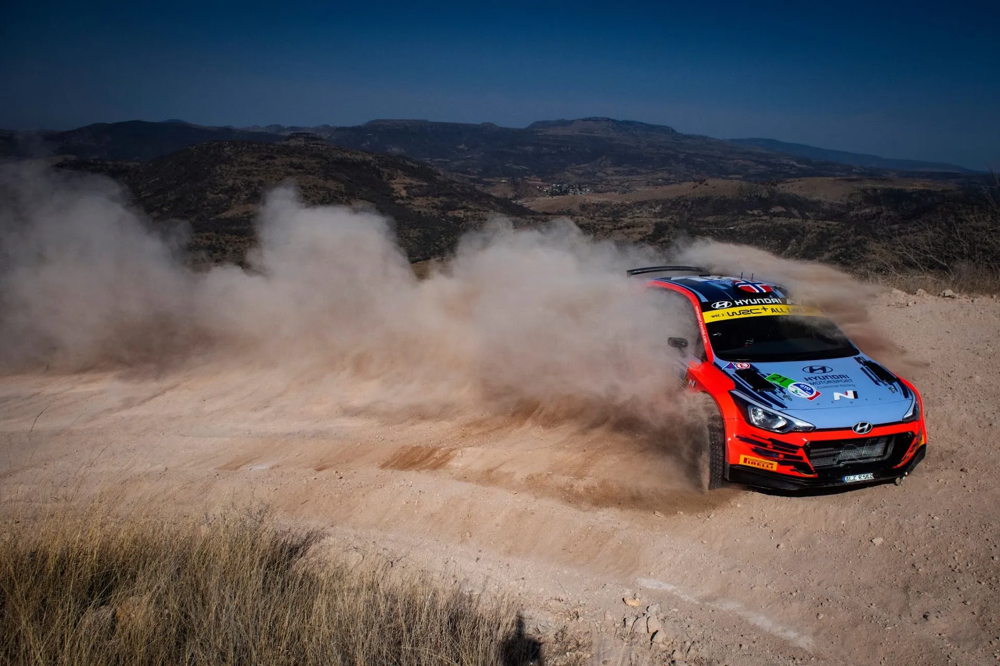
The R5 Class: The Story So Far
Welcome to the R5 class history, a series where we will be taking a look at the cars in the R5/Rally2 class, and how they performed in the most competitive of championships, as well as which drivers performed the best in them. I have put together an algorithm that counts the wins, podiums, and stage wins of each Rally2 car, and ranks them based on these achievements. A win counts for 3 points, a podium counts for one, and each stage win is worth a tenth of a point. Instead of taking a look at every car separately, let's take a look at how every car ranks and how their score changed through time. We will also be exploring what driver contributed the most in each car's score and discovering who their "Statistical Goat" is.
The series looked at are: ERC, WRC2, WRC2-Pro, WRC2 Open.
The stats are valid as of 26/09/2025, after Rally Chile.
Citroen DS3 R5 - 24.4 Points
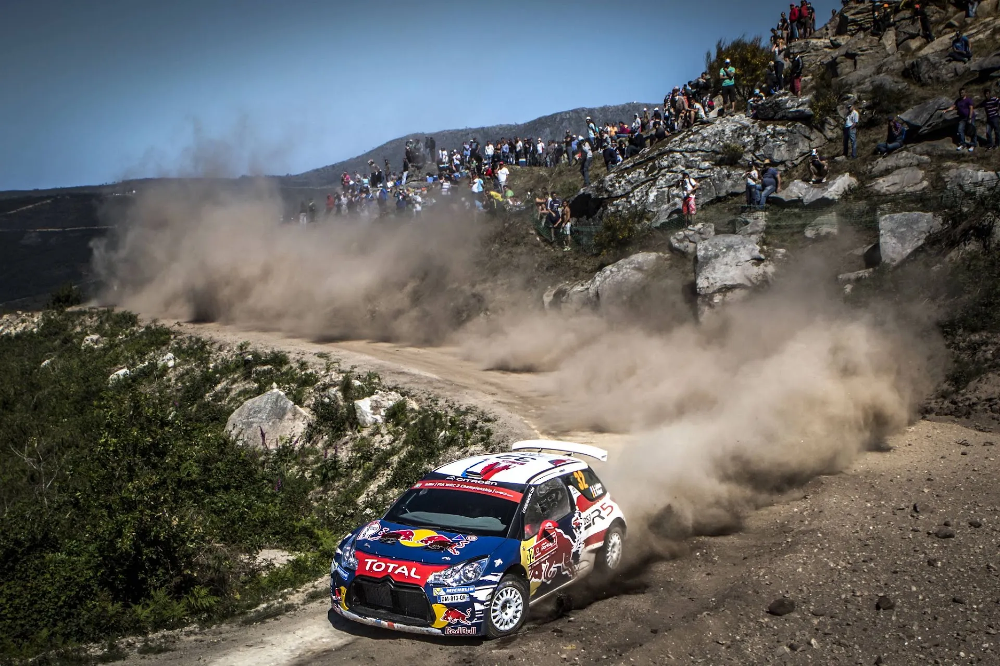
Kin Marcin / Red Bull Content Pool
Citroen's first attempt at an R5 rally car is in last place among the homologated R5/Rally2s. The DS3 R5 would make its competitive debut in WRC2 with Sebastien Chardonnet at Rally Italia Sardegna in 2014 and would finish a credible 2nd place. However, the car would be plagued by major reliability issues moving forward, only managing 2 wins in international competition, thanks to Stephane Lefebvre's win in Rallye Monte-Carlo in 2015 and Craig Breen's win in Ireland, also in 2015. The car would stop having manufacturer support following the introduction of the C3 R5 in 2018, with its last major result coming in Monte-Carlo in 2018, where Eddie Sciessere finished on the podium in WRC2.
Greatest Contributor to the Citroen DS3 R5's score: Stephane Lefebvre - 1 win - 1 podium - 5 stage wins
Hyundai i20 R5 - 29.9 Points

Jaanus Ree / Red Bull Content Pool
Next on the ranking is Hyundai's first i20 R5. The car would debut in Corsica in 2016, but would not have any major success early on. It would be plagued by mechanical issues throughout its tenure and would also be slower compared to its rival cars.
In 2020, Hyundai would enter the i20 R5 in a semi-manufacturer basis in WRC2 with OC Veiby and Nikolay Gryazin, and would achieve a total of five podium finishes. Jari Huttunen would also win WRC3 that year. In 2021, the car would achieve its only win in either ERC or WRC2 thanks to Huttunen's win in Sardinia. That win came only two rallies before the new i20 Rally2 was introduced.
Greatest Contributor to the Hyundai i20 R5's score: Jari Huttunen - 1 win - 4 podiums - 20 stage wins
Peugeot 208 T16 R5 - 42.2 Points
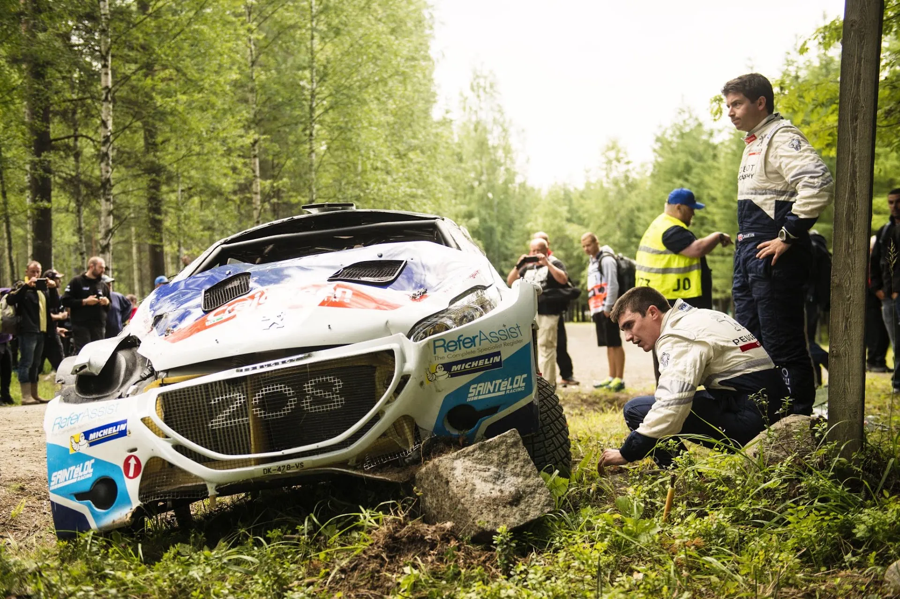
Jaanus Ree / Red Bull Content Pool
The Peugeot 208 T16 was only the second car to be homologated. The car was rapid, as evident by its performance in Acropolis 2014, where it would win on its debut. Unfortunately, just like the DS3 R5, it was plagued by various mechanical issues. Both Craig Breen and Kevin Abbring would lose out on wins and podiums in the 2014 ERC season due to the car's poor reliability.
Breen would lose out on both the WRC2 and the ERC title in 2015, after which the 208 would fall out of favour and was eventually replaced by the C3 R5, just like the DS3.
The car would continue to be used in the ERC by Peugeot's Driver Academy until 2018, with Laurent Pellier, J.A. Suarez and Pepe Lopez all having campaigns in the series with the 208.
Greatest Contributor to the Peugeot 208 T16 R5's score: Craig Breen - 4 wins - 9 podiums - 73 stage wins
Ford Fiesta Rally2 - 53.8 Points
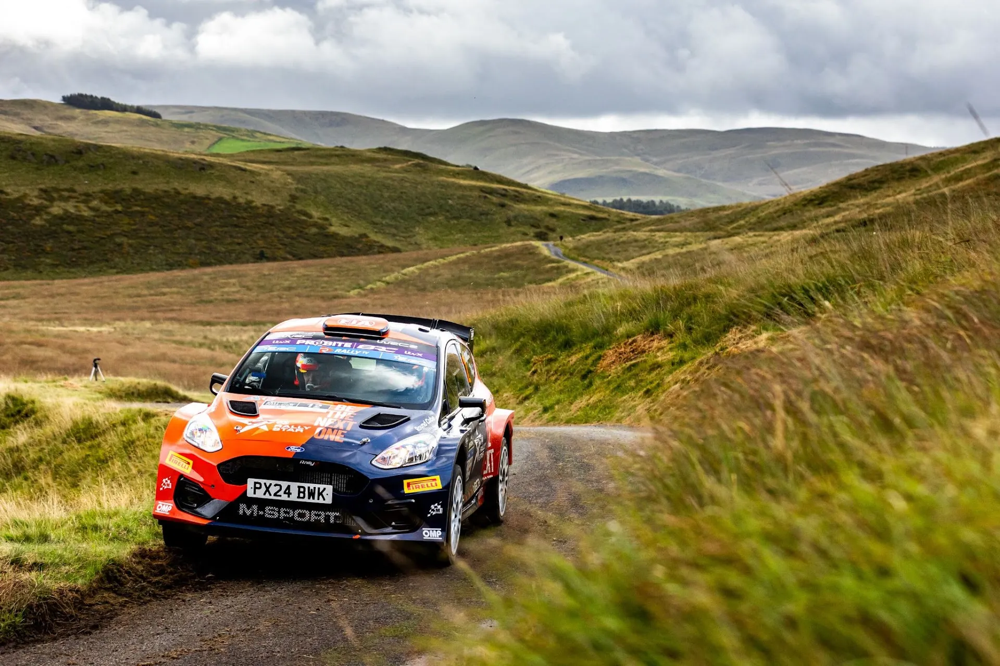
@World / Red Bull Content Pool
The Fiesta Rally2 (or mkII R5 as it was originally known) replaced the successful Fiesta R5 mid-way through the 2019 season. Unfortunately, it wouldn't be able to match its predecessor's success, falling out of favour with privateers in WRC2 and ERC, who instead chose to drive faster alternatives, like the Skoda Fabia R5 or the Citroen C3 R5.
Gus Greensmith achieved the car's first win in Rally Turkey back in 2019, with Adrien Fourmaux also winning the Islas Canarias Rally in the ERC the following year. Drivers like Teemu Suninen, Jari Huttunen, and pretty much every JWRC winner would all struggle with the car in the following years.
More recently, updates brought in by M-Sport at the end of the 2023 season would see the car become more competitive, mostly on tarmac. Jon Armstrong has been able to drive the car to podiums and wins in the ERC this season, with the M-Sport achieving a 1-2 finish in Rali Ceredigion earlier in the month.
Greatest Contributor to the Ford Fiesta Rally2's score: Adrien Fourmaux 1 win - 6 podiums - 46 stage wins
Hyundai i20 Rally2 - 54.6 Points
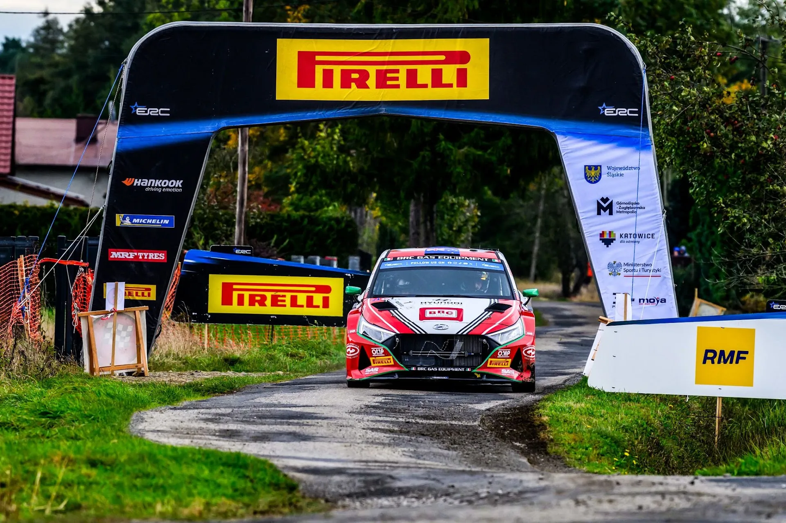
@World / Red Bull Content Pool
Hyundai's replacement for the i20 R5 would not be the upgrade the team hoped for. Jari Huttunen would win on the car's debut in the Ypres Rally in 2021, despite enduring a power steering failure, and would also finish 3rd in Finland. 2022 would be the best year for the i20 Rally2, as Teemu Suninen, Hayden Paddon and Gregoire Munster would achieve wins with the car in WRC2 Open, with the team finishing 2 points off Toksport in the teams standings.
Unfortunately, the car would regress following that season, with Munster's win in Japan being the car's last in the WRC. Teemu Suninen and Emil Lindholm would endure miserable campaigns in 2023 and especially in 2024, with updates aimed at making the car a "tarmac specialist" Rally2 failing to do so, at least in the WRC.
The only driver who has been able to achieve major success in the i20 Rally2 is Hayden Paddon, with the Kiwi winning back-to-back titles in the ERC in 2023 and 2024.
Greatest Contributor to the Hyundai i20 Rally2's score: Hayden Paddon 3 wins - 11 podiums - 48 stage wins
Volkswagen Polo GTi R5 - 65.6 Points
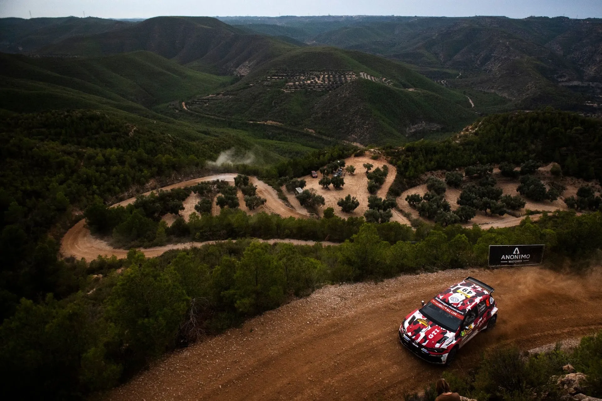
Jaanus Ree / Red Bull Content Pool
Following Volkswagen's withdrawal from the sport at the end of 2016, the team would start development on the Volswagen Polo GTi R5. The car made its debut in Rally Catalunya in 2018, and would show promising pace, with Eric Camilli leading the rally in WRC2 before a gearbox failure. Petter Solberg would finish the rally in 3rd, giving the Polo a nice result on its debut. Early in its lifetime, the Polo R5 would have the unfortunate luck of catching fire, with two chassis being destroyed due to fires in Rally Portugal alone!
The following year, Oliver Solberg would give the Polo its first win in international competition by winning Rally Liepaja, with Nasser Al-Attiyah also winning Rally Cyprus. Solberg would also win Liepaja in 2020, and would also achieve another podium finish in Rally di Roma Capitale.
The Polo would not be used in WRC2-Pro or WRC2 in 2019 and 2020, as it was intended for privateers, but it would get good results in WRC2/3, with Johan Kristoffersson, Ole Christian Veiby, Kajetan Kajetanowicz, Emil Lindholm and Oliver Solberg all managing wins or podiums.
The car had an especially good engine, which made it a forbidable car on rallies like Sweden or Finland. 2021 was the car's best year, with Esapekka Lappi managing two wins, and Teemu Suninen also winning in Finland, with Nikolay Gryazin also managing a win in the ERC.
The car would start to fall out of fashion following 2021, but would still get some decent results. Ole Christian Veiby finished on the podium in Sweden in 2023, and Oliver Solberg won the Royal Rally of Scandinavia while driving the Polo.
Greatest Contributor to the Volkswagen Polo GTi R5's score: Oliver Solberg 3 wins - 4 podiums - 33 stage wins
Toyota GR Yaris Rally2 - 93.7 Points
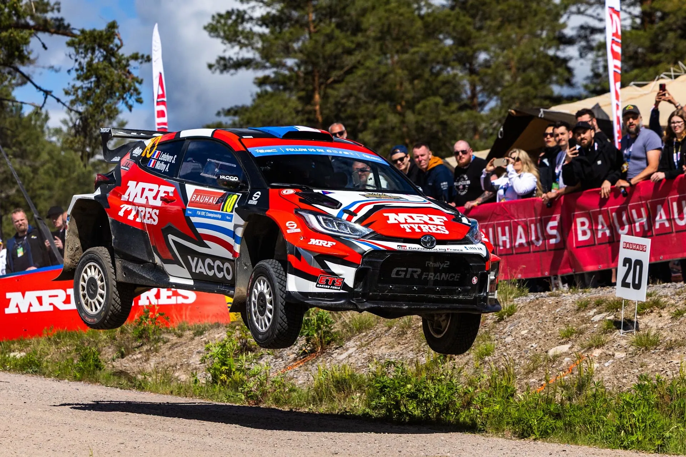
@World / Red Bull Content Pool
The Toyota GR Yaris is the newest car to be homologated for the Rally2 regulations. The car has been met with immediate success, winning two WRC2 Drivers titles in equal seasons of competition. Jan Solans gave the Yaris its first win in WRC2 in Portugal 2024. Sami Pajari gave the car another 4 wins en route to the WRC2 title. This year, Oliver Solberg managed a great 5 wins in his nominated rallies, winning the WRC2 title in Rally Chile.
Roope Korhonen, Georg Linnamae, and Eyvid Brynildsen have given Toyota's Rally2 a win each in the European Rally Championship as well.
Greatest Contributor to the Toyota GR Yaris' score: Oliver Solberg 5 wins - 5 podiums - 69 stage wins
Citroen C3 Rally2 - 211 Points
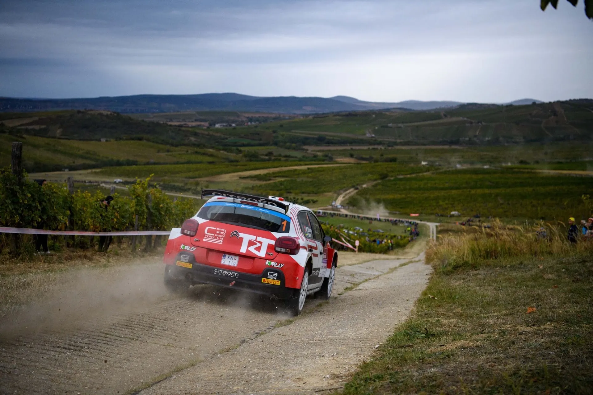
@World / Red Bull Content Pool
The Citroen C3's debut season was a rocky one. The new car would only manage three podiums in its first season, with Stephane Lefebvre, Simone Tempestini, and Yoann Bonato managing a podium each. Lefebvre would be the only one to win at least one stage. Things would change for the better in 2019, as Mads Ostberg would be assigned to a WRC2-Pro campaign in the C3, also developing the car, winning 3 rallies, and achieving another three podium finishes. In the ERC, Lukyanuk and Pepe Lopez would win three rallies combined, with the Russian being the fastest driver that year when he kept it on the road.
Ostberg and Lukyanuk would do one better in 2020, winning the WRC2 and ERC titles. Both would be dethroned by Andreas Mikkelsen the following year, with Ostberg especially suffering with the reliability of the C3. Yoann Rossell would win the WRC3 title that season and would compete full-time in WRC2 the following year. The Frenchman would win in Croatia and Portugal, with Lefebvre also winning in Ypres. Bonato would also manage good results on tarmac in the ERC, winning in Catalunya.
The surface the car excelled on was tarmac, and that continued to show in 2023, with Rossell again being Citroen's leading driver, winning in Monte Carlo and Croatia. For 2024, Citroen would partner Rossell with Nikolay Gryazin, with the pair achieving a combined 5 wins and 10 podium finishes. DG Sport, which run the team's programme, would win the Team's title, but neither of their drivers would go on to win the WRC2 crown.
This year was more of the same for Yoann Rossell, as he'd win two rallies, but not manage to win the WRC2 crown for the third year in a row, losing to Oliver Solberg.
Greatest Contributor to the Citroen C3 Rally2's score: Yoann Rossell - 8 wins - 18 podiums - 107 stage wins
Skoda Fabia RS Rally2 - 217 Points
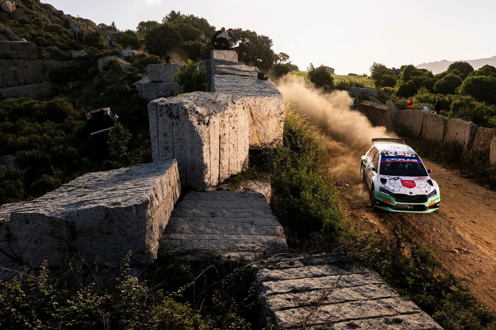
Jaanus Ree / Red Bull Content Pool
The Skoda Fabia RS Rally2 replaced the successful Fabia evo R5 at the start of the 2023 season. It would dominate on its debut season, winning a combined 10 out of 13 rallies in WRC2 that year. Toksport assembled an all-star lineup of Andreas Mikkelsen, Oliver Solberg, and Gus Greensmith, with the Norwegian winning the WRC2 title. The car would also see success in the ERC, with Martins Sesks winning two rallies. The following year would see Mikkelsen depart for Hyundai, with Toksport replacing him with Pierre Louis Loubet.
Solberg would be the best driver in a Skoda, winning three rallies and achieving five podium places, but he'd lose out on the title to Sami Pajari in the new Yaris Rally2. In the ERC the Fabia would win four events, with another 12 podium finishes also.
This year, Solberg would leave for Toyota, with the Fabia having won three rallies this year so far, with Greensmith, Dapra and Virves. There's a good chance the ERC champion will be in a Fabia RS Rally2, as Miko Marczyk and Andrea Mabellini, the top 2 in the ERC champion, drive the Fabia.
Greatest Contributor to the Skoda Fabia RS Rally2's score: Oliver Solberg - 6 wins - 10 podiums - 114 stage wins
Skoda Fabia evo R5 - 220 Points
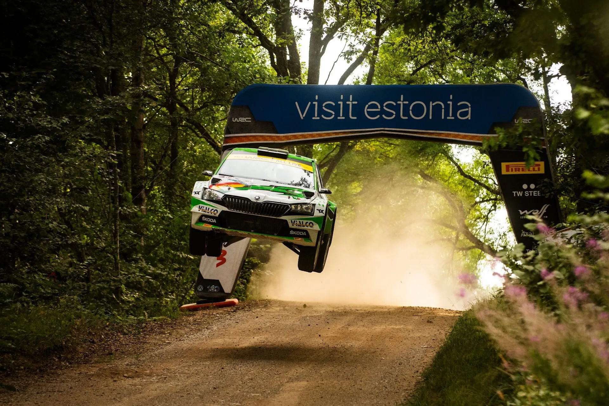
Jaanus Ree / Red Bull Content Pool
An evolution to the very successful Fabia R5 was introduced mid-way through the 2019 season. The Fabia R5 evo would help Kalle Rovanpera win the 2019 WRC2-Pro title, with the Finn achieving 4 wins and 7 podiums in the new car. Jan Kopecky would also win in Germany and Zlin while driving the evolution of the Fabia. Pontus Tidemand came close to the WRC2 title in 2020, but would ultimately lose out to Mads Ostberg in the C3.
2021 was a year of domination for the Czech outfit, as the Fabia R5 evo would win both the WRC2 and the ERC titles, courtesy of Andreas Mikkelsen. The Norwegian would win a total of 5 rallies and finish on the podium in four others in both series. Despite winning the most rallies in 2022 as well, Mikkelsen would lose the title to Toksport teammate Emil Lindholm after having his engine fail on him in consecutive rallies. The car would be driven to a combined 8 wins that year, thanks to Mikkelsen, Lindholm, Kajto, and Gryazin. Efren Llarena would also win the title in the ERC, winning in Azores.
The Fabia RS Rally2 would be introduced for the following year, but the R5 evo would still be used, with Kajetanowicz winning in Safari, and Lindholm finishing on the podium in Mexico. Miklos Csomos and Ferenc Vincze would also finish on the podium with the old car in the ERC.
Greatest Contributor to the Skoda Fabia evo's score: Andreas Mikkelsen - 9 wins - 14 podiums - 108 stage wins
Ford Fiesta R5 - 291 Points
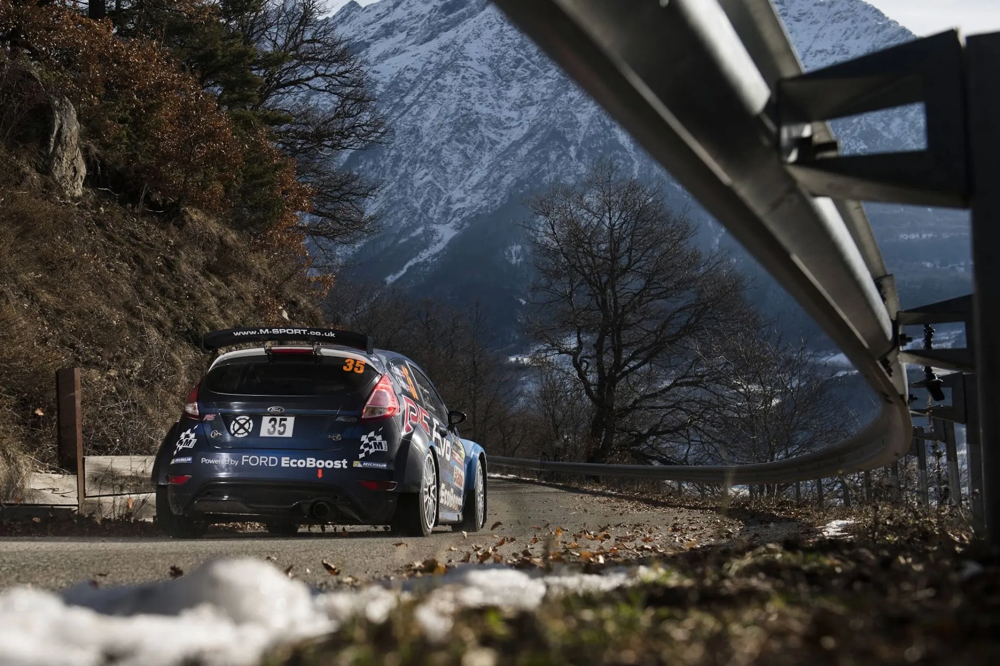
Jaanus Ree / Red Bull Content Pool
The Fiesta R5 was the first car to be homologated all the way back in 2013. It would win on its debut in WRC2, with Jari Ketomaa finishing on the top step of the podium in Finland. There would also be a 1-2-3-4-5 finish for the Fiesta in WRC2 in Wales Rally GB. Kajetan Kajetanowicz would also win with the new car in Poland. The car would achieve a total of 6 wins and 21 podiums in 2014, but would ultimately lose out on the WRC2 crown to Nasser Al-Attiyah in the older RRC Fiesta.
2015 saw the arrival of the Fabia and DS3 R5, with the Fiesta losing its monopoly in WRC2 and ERC. Kajetan Kajetanowicz would win the ERC crown that year with three wins and seven podium finishes. Alexey Lukyanuk would also win in Switzerland that year. The following season, Kajetanowicz would repeat his success, winning the ERC crown ahead of Lukyanuk. The Fiesta achieved a total of 7 wins and 20 podium finishes in 2016 in the ERC and WRC2, with Elfyn Evans also having a decent season in WRC2.
The car would continue to be competitive in 2017, and would again achieve 7 wins in both categories, with Kajetanowicz going three in a row in the ERC. Kalle Rovanpera would also pick up his maiden WRC2 win in a Fiesta, winning in Australia, and also finishing on the podium in Rally Liepaja.
2018 would see the car fall behind its rivals, at least in WRC2. Alberto Heller won in Australia, and Takamoto Katsuta won in Sweden, with Gus Greensmith, Pedro Heller and Teemu Suninen managing podium finishes as well. Alexey Lukyanuk would win three rallies in the ERC, winning the championship, and making it four in a row for the car.
The Fiesta would be used in 2019 as well, before the introduction of the mkII R5. Gus Greensmith and Lukasz Pieniqzek would win a combined three rallies in WRC2-Pro before the new car was introduced. The last driver to achieve a major result onboard the Fiesta would be Mikko Hirvonen, who finished on the podium in Rally Cyprus later that year.
Greatest Contributor to the Ford Fiesta's score: Kajetan Kajetanowicz - 6 wins - 19 podiums - 101 stage wins
Skoda Fabia R5 - 375 Points
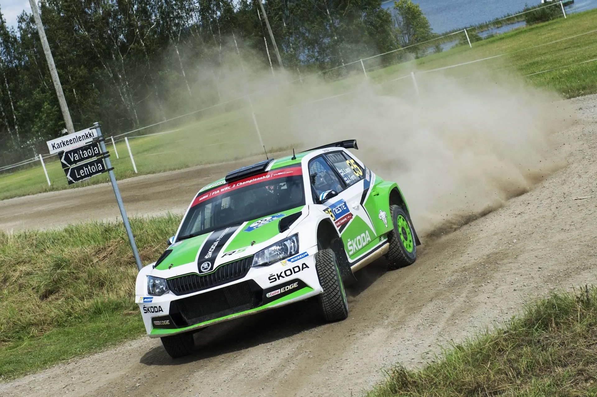
Jaanus Ree / Red Bull Content Pool
The Skoda Fabia R5 finds itself in the top spot! The car was introduced mid-way through the 2015 season, and would achieve a total of four wins thanks to Esapekka Lappi, Pontus Tidemand, and Jan Kopecky. Kopecky would also win in Zlin, with Freddy Loix winning in Ypres. The following year, Esapekka Lappi would win the WRC2 title with 4 wins to is name. It would be a Fabia 1-2 with Teemu Suninen finishing in 2nd place. In the ERC, Ralfs Simracis would win three rallies, but would lose out on the title.
2017 was Tidemand's year, with the Swede winning 5 rallies en route to the WRC2 title. VW refugee Andreas Mikkelsen would also achieve two wins with the car, with Kopecky and OC Veiby achieving one each. Skoda would win a third WRC2 title in a row in 2018, this time with Jan Kopecky winning five rallies on his way to the title. The Fabia R5 would win a total of 11 rallies that year, achieving another 21 podiums!
2019 would see Kalle Rovanpera win one rally in the Fabia R5, before the new car was introduced. In the ERC, Chris Ingram would win the title, despite having no wins to his name.
Despite the age of the Fabia R5, the car has still managed podium finishes in the following years, both in WRC2 and ERC, with the latest being Hiroki Arai at Rally Japan last year! The car is widely used in competition to this day, but mostly in local championships.
Greatest Contributor to the Skoda Fabia's score: Jan Kopecky - 11 wins - 19 podiums - 163 stage wins
I will leave you with the following graph, showing how each of the cars fared from 2013 to present day! As a sidenote, the Proton Iriz R5 has competed in one event, in Rally Poland in 2021, but it was just an entry list filler, and does not really deserve a full segment in this post. Thanks for reading!
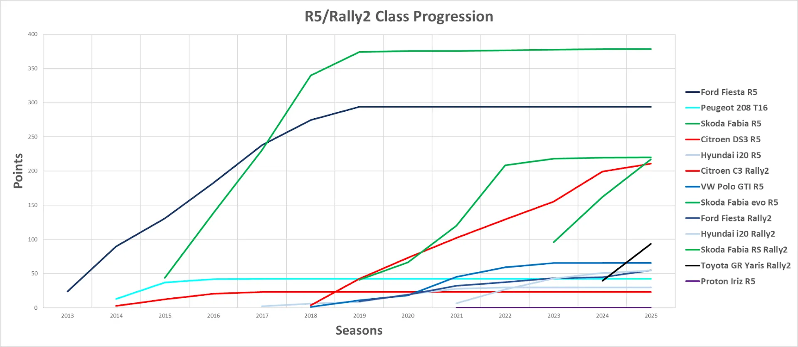


Comments